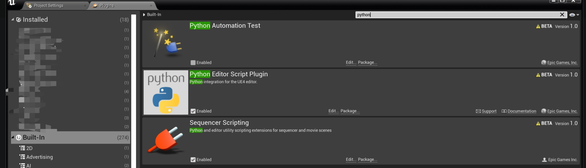

引言
正好需要使用Unreal Python开发相关功能，又逢换了新电脑，写篇记录记载下环境配置过程。希望能给到您帮助~
1.开启python plugin

2.生成unreal.py文件

重启引擎，可以在\your_unreal_project\Intermediate\PythonStub文件夹下生成unreal.py文件
3.设置pycharm编译路径

4.调整最大文件大小
由于文件过大，导致pycharm不去扫描该文件。打开 help→ Edit Custom Properties

在其中输入：
idea.max.intellisense.filesize=500000
5. 添加UE插件位置
添加脚本位置
虚幻编辑器会自动添加多条路径 sys.path 中的列表:
- 工程目录中 Content/Python 子文件夹下的项目。
- 主虚幻引擎安装目录中 Content/Python 子文件夹下的项目。
- 每个插件启用的目录中 Content/Python 子文件夹下的项目
- …
可以在Edit >Project Setting>Plugins>Python 中添加一个Python文件夹

然后在文件夹中创建main.py的文件，写入以下代码：
1 | import unreal |
重启编辑器后，在Out outlog窗口中输入：
1 | import main |
修改后需要调用 reload进行重新加载
1 | from importlib import * |
Execute Python Script

直接选中脚本进行运行
直接py调用